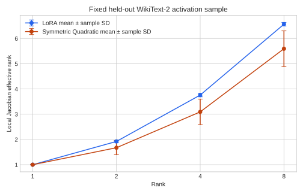
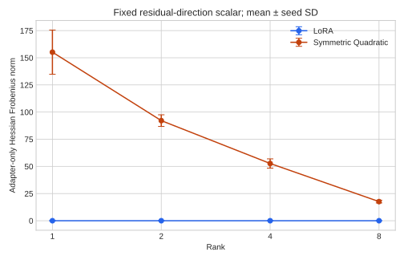

Project 01 · Mechanism
Derivatives and learned spectra
The analyses in this section characterize the local behavior of the trained adapters. They establish structural differences between LoRA and Symmetric Quadratic Adaptation, but they do not by themselves explain the observed performance differences.
Local Jacobians
JSymmetric(x) = 2(α/r) U diag(xU) P
LoRA is linear at the adapter level, so its Jacobian is independent of the input activation. Its local transformation can therefore be represented by one fixed low-rank update matrix. The Symmetric adapter is quadratic. Its Jacobian depends explicitly on the current activation through diag(xU), so the effective local transformation changes with the input. In general, Symmetric therefore cannot be reduced to one constant ΔW.
The analytical Jacobian expressions were checked against PyTorch autograd in double precision. This structural distinction is not a causal claim about performance.
Effective-rank analysis
| Rank | LoRA effective update | Symmetric local Jacobian |
|---|---|---|
| 1 | 1.00 | 1.00 |
| 2 | 1.92 | 1.67 |
| 4 | 3.76 | 3.09 |
| 8 | 6.57 | 5.59 |
| Rank | U effective rank | P effective rank | Output-covariance effective rank |
|---|---|---|---|
| 1 | 1.00 | 1.00 | 1.00 |
| 2 | 2.00 | 1.98 | 1.92 |
| 4 | 3.99 | 3.89 | 3.00 |
| 8 | 7.96 | 7.28 | 3.59 |
These quantities describe different mathematical objects and should not be interpreted as interchangeable notions of “weight rank”. In particular, the Symmetric local-Jacobian rank is not a direct analogue of a fixed LoRA weight-update rank.

Second-order structure
For a fixed linear reduction of the adapter output by a vector c:
LoRA has an exactly zero adapter-only Hessian with respect to the adapter input because its branch is linear. Symmetric has an explicit second-order response. The analytical Hessian was checked against PyTorch autograd in double precision.
| Rank | Symmetric Hessian Frobenius norm |
|---|---|
| 1 | 155.15 |
| 2 | 92.13 |
| 4 | 52.68 |
| 8 | 17.61 |
The decrease with nominal rank should not be interpreted as evidence that higher-rank adapters contain weaker or less useful interactions. Its magnitude depends on learned factors and on the α/r scaling used in the main protocol. Because the exact quadratic adapter has an input-independent Hessian for a fixed linear output reduction, repeated token activations are not independent Hessian observations. A full Transformer-block Hessian was not evaluated and is therefore not reported as an empirical result.

Computational cost at rank 4
The matched benchmark uses batch size 1, sequence length 128, 10 warm-up iterations, and 30 measured iterations. Both methods use 6,144 trainable adapter parameters.
| Method | Forward latency | Backward latency | Peak VRAM | Forward throughput |
|---|---|---|---|---|
| LoRA | 12.157 ± 0.243 ms | 14.805 ± 0.236 ms | 429.05 MiB | 10,529 tokens/s |
| Symmetric Quadratic | 12.184 ± 0.236 ms | 14.766 ± 0.188 ms | 430.31 MiB | 10,505 tokens/s |
Relative to LoRA, Symmetric changes mean forward latency by approximately +0.22%, mean backward latency by −0.27%, peak allocated VRAM by +1.25 MiB, and forward throughput by approximately −0.22%. In this measured configuration, the two methods have nearly identical computational cost. The benchmark indicates that, in this implementation and hardware configuration, introducing the element-wise quadratic activation operation adds only a small measured computational overhead. This result should not be generalized to all hardware or model scales.